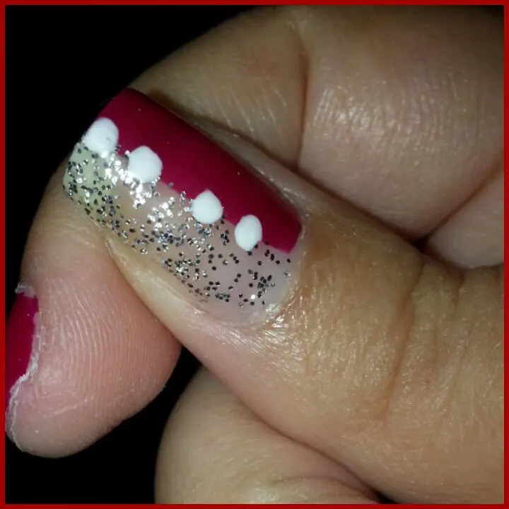
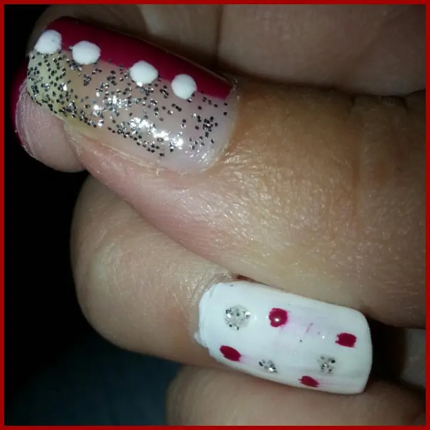
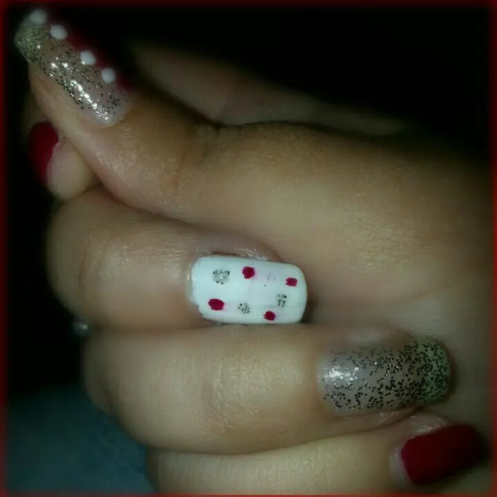

proposta nail art fine maggio
Hola baby.Buon pomeriggio a tutte come va? :D Ehm.. siamo ormai arrivati a fine maggio e non si capisce bene che intenzioni ha questo tempo.. Ma a parte questo, ragazze belle, io sto bene e voi???
Per fine maggio ho voluto rifare la nail art, visto che è da un bel pò che non ne facevo una.. Ovvero da inizio maggio ahahah E beh, per me era tanto.. considerando che sono stata l'ultima Settimana soltanto con Il lucido. Almeno hanno respirato un pò.
Passando alla proposta che ho per voi, vi anticipo che ho voluto essere un pò più stravagante del solito.
Gli smalti usati sono:● una delle tante tonalità di Rosso kiko● bianco french● un lucido pieno di glitter argento ● lucido per chiudere il tutto.
Inizio col dirvi che ho preso l'idea da una nail art vista in internet ma poi però, come sono solita fare, l'ho personalizzata a mio piacimento e a mia comodità.
Voglio precisare che io non sono abituata a scrivervi per filo e per segno i colori e le tonalità, poiché alla fine sono cose che si possono fare con qualsiasi colore. Dunque è più un gusto personale prima di tutto e sinceramente, stare lì a dirvi "questo che ho usato è il numero tot. preso a questo prezzo in quel paese ma era in offerta edizione limitata bla bla" per fare la figa non è da me ahahahah
Detto ciò, passiamo alle fotine della mia nail art.

Sul pollice mi piaceva fare una differenza tra i due colori chiaro e scuro perché facendo le altre dita un mix tra i tre colori rosso, bianco e argento, mi ispirava molto una divisione netta, ovviamente punteggiato il tutto con un bianco che non stona mai e che è molto decorativo.

L'indice l'ho fatto tutto rosso.
Il medio base bianca e con pallini pois rosso e argento.
L'anulare tutto argento glitterato.
E per finire di nuovo sul mignolo tutto rosso.
E il tutto risulta così:

;) ditemi la vostra.
Un besos la vostra pepita